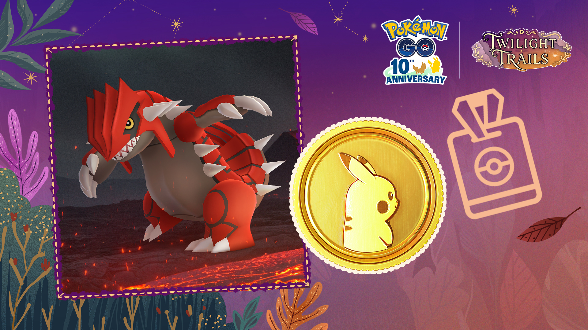

포켓몬고 11월 GO패스 디럭스 가격과 보상 차이, 살까 말까
GO패스 디럭스는 새 달이 다가올 때마다 결제 버튼 앞에서 한 번쯤 멈칫하게 되는 항목인데요, 11월 판은 한국시간 11월 3일 오전 10시에 열릴 예정이에요. 아직 시작 전이라 앱에서 열어 본 건 아니고, 공식 발표에 나온 내용만 모아 디럭스를 살지 말지 비교해 봤어요. 결론부터 말하면 무료와 디럭스는 딱 네 군데에서만 갈려요.

그란돈이 전면에 선 11월 GO패스 키비주얼이에요.
이미지 출처: Pokémon GO 공식 발표 · 네이버 본문엔 받아서 재업로드 권장
11월 GO패스는 언제까지고, 디럭스는 얼마인가요?
11월 GO패스는 한국시간 11월 3일 화요일 오전 10시부터 12월 1일 화요일 오전 10시까지 한 달 동안 이어져요. 무료 GO패스는 시작 시각에 자동으로 들어오니 따로 신청할 건 없고, 결제가 필요한 건 디럭스뿐이에요.
| 구분 | 가격 | 들어 있는 것 |
|---|---|---|
| 무료 GO패스 | 무료 | 시작 시각에 자동 지급 |
| GO패스 디럭스 | $7.99 | 디럭스 전용 보상 |
| 디럭스+10랭크 | $9.99 | 디럭스 + 랭크 11부터 시작할 수 있는 GO 포인트 |
가격은 달러 기준이고, 현지 통화로는 같은 가치로 표시돼요. 제가 보기엔 +10랭크는 2달러를 더 내고 랭크 10개를 건너뛰는 선택이에요. 랭크 하나에 0.2달러 꼴인 셈인데, 랭크 25까지 올려야 할 랭크가 24개에서 14개로 줄어드니 접속 시간이 빠듯한 분께는 값어치가 있고 매일 들어가는 분께는 없어도 되는 옵션이 아닐까 싶습니다.
그리고 디럭스는 언제든 업그레이드할 수 있고, 이미 올려 둔 랭크의 디럭스 보상도 나중에 받을 수 있어요. 그러니 시작하자마자 서둘러 결제하지 않아도 되거든요.
· 한국 앱 결제 화면에 뜨는 원화 가격
· 웹스토어 번들별 가격
확인 위치: 11월 3일 이후 앱 GO패스 화면·포켓몬 GO 웹스토어 · 확인되면 아래에 채워주세요.
무료 GO패스와 디럭스, 보상은 뭐가 다른가요?
디럭스는 무료 보상 위에 1,000 포켓코인, 슈퍼 부화장치 1개, 추가 포켓몬 만남이 더해지는 구조예요. 표로 나란히 놓으면 이래요.
| 보상 | 무료 GO패스 | GO패스 디럭스 |
|---|---|---|
| 그란돈과의 만남 | O | O |
| 포켓코인 | 400 | 1,400 (무료 400 + 추가 1,000) |
| 행복의알·이상한사탕XL·별의모래 | O | O |
| 슈퍼 부화장치 | X | 1개 |
| 추가 포켓몬 만남 | X | O |
코인만 놓고 보면 400개가 1,400개가 되니 3.5배나 차이 나네요. 그럼 누가 디럭스를 사면 좋을지, 이유까지 붙여서 갈라 볼게요.
이럴 땐 이렇게 골라요
· 그란돈만 노린다면 일단 무료로 시작해 보세요. 그란돈 만남은 무료 GO패스 보상에도 들어 있어요. 디럭스의 추가 만남에 뭐가 나오는지는 아직 알려진 게 없어서 거기까지는 판단하기 어렵네요.
· 알 부화를 많이 돌리는 분이라면 디럭스가 맞아요. 슈퍼 부화장치는 디럭스 보상에만 있거든요.
· 선물을 많이 열고 보관하는 분께도 디럭스가 유리하죠. 랭크 25부터 하루 열기가 10개, 포토디스크 선물이 25개, 가방 보관이 10개 더 늘어나요.
· 랭크 25까지 시간이 빠듯하다면 디럭스+10랭크가 어울려요. 랭크 11에서 출발하니까요.
· 추가 포켓몬 만남이 결제 이유라면 한 번 더 생각해 보세요. 어떤 포켓몬이 나오는지 알려진 게 없어서, 결제를 정할 만큼의 정보가 아직 없어요.
마일스톤 보너스는 랭크 1·25·50·75 네 구간인데요, 무료와 디럭스가 갈리는 곳은 랭크 25 하나뿐이에요.
| 구간 | 무료 GO패스 | GO패스 디럭스 |
|---|---|---|
| 랭크 1 | 교환 시 사탕 +1, 레벨 31 이상은 교환 시 사탕XL 1개 확정 (구분 없이 안내돼요) | |
| 랭크 25 | 하루 선물 열기 40 · 포토디스크 선물 125 · 가방 선물 보관 +10 | 하루 선물 열기 50 · 포토디스크 선물 150 · 가방 선물 보관 +20 |
| 랭크 50 | 산책향로 지속시간 2배 (구분 없이 안내돼요) | |
| 랭크 75 | 알 부화 시 별의모래·XP 증가 (구분 없이 안내돼요) | |
몇 랭크에 어떤 보상이 있는지는 이 화면이 가장 정확해요.
· 보상별 랭크 배정 (그란돈 만남·1,400코인 등이 몇 랭크에 있는지)
· '기타 보너스' 내역
확인 위치: 11월 3일 이후 앱 GO패스 랭크 목록 · 확인되면 아래에 채워주세요.
웹스토어 번들 3종은 뭐가 들어 있나요?
번들 3종 중 웹스토어 한정은 하이퍼 박스뿐이고, 디럭스 11월과 +10랭크는 웹스토어 구매 특전이에요. 웹스토어로 산 디럭스는 기간이 시작하는 순간 바로 활성화돼요.
| 번들 | 하이퍼볼 | 기력의덩어리 | 프리미엄 배틀패스 | 풀회복약 |
|---|---|---|---|---|
| 디럭스 11월 | 10 | 5 | 1 | 5 |
| 디럭스+10랭크 | 10 | 5 | 2 | 5 |
| 하이퍼 박스 | 20 | 10 | 5 | 10 |
표를 보면 디럭스 11월과 +10랭크 번들의 차이는 프리미엄 배틀패스가 1개냐 2개냐뿐이에요. 하이퍼 박스는 하이퍼볼·기력의덩어리·풀회복약이 디럭스 11월의 딱 두 배, 배틀패스는 5개라 배틀패스를 많이 쓰는 분이 노릴 구성이에요. 반대로 배틀패스를 안 쓰는 분이라면 디럭스 11월과 +10랭크 번들의 차이가 사실상 없으니, 랭크를 건너뛰고 싶은지만 따져 보시면 돼요.
GO 포인트 상한 해제와 만료일은 언제인가요?
GO 포인트 하루 획득 상한은 11월 28일 토요일 0시부터 29일 일요일 23시 59분까지 사라지고, GO패스에서 잠금 해제하고 받지 않은 보상은 무료·디럭스 구분 없이 12월 3일 오전 10시에 만료돼요.
- 11월 3일 10:00에 11월 GO패스가 시작되고, 무료 GO패스가 자동으로 들어와요.
- 11월 28일 00:00부터 29일 23:59까지는 GO 포인트 하루 획득 상한이 없어요.
- 12월 1일 10:00에 11월 GO패스가 끝나요.
- 잠금 해제했는데 받지 않은 GO패스 보상은 12월 3일 10:00에 만료돼요.
종료와 만료 사이에 이틀이 비어 있는데요, 랭크 올리기는 12월 1일 오전 10시에 끝나도 이미 잠금 해제된 보상은 12월 3일 오전 10시까지 받을 수 있어요. 그 이틀은 새 보상을 여는 시간이 아니라 남은 걸 받아 가는 시간이라, 무료든 디럭스든 종료 직후에 보상 화면에서 안 받은 항목이 있는지 훑어 두면 놓치지 않아요.
상한이 풀리는 이틀은 랭크를 몰아 올릴 마지막 기회라서, 랭크 25가 아직 멀었다면 이때 승부를 보는 게 좋겠어요. 디럭스는 중간에 올려도 되니 그 직전 랭크 상황을 보고 결제 여부를 정하는 순서를 추천드려요.
10월 GO패스를 아직 쥐고 있다면 날짜가 겹치니 짚어 둘게요. 10월 판은 11월 3일 오전 10시에 끝나고, 보상은 11월 5일 오전 10시에 만료돼요. 10월 반짝이 참만 11월 8일 23시 59분까지 쓸 수 있어서, 11월 판이 열리면 10월 보상부터 비워 두는 편이 안전해요.
자주 묻는 질문
Q. 그란돈은 색이 다른 모습으로도 나오나요?
공식 안내에 색이 다른 포켓몬일 수도 있다고 적혀 있어요. 다만 나올 확률과 만남 형태는 따로 밝히지 않았어요.
Q. 지역마다 디럭스 이용이 다른가요?
공식 안내에 따르면 이벤트 티켓과 디럭스를 이용할 수 있는지는 지역에 따라 다를 수 있다고 해요. 한국에서 어떻게 보이는지는 11월 3일에 앱을 열어 봐야 알 수 있어요.
Q. 10월 디럭스를 샀는데 11월도 같은 구성인가요?
아니요, 조금 달라요. 10월 디럭스는 반짝이 참 1개·슈퍼 부화장치 1개·추가 만남이 붙었는데, 11월 공식 요약에는 반짝이 참이 안 보이고 대신 포켓코인 1,000개가 적혀 있어요. 같은 가격이라도 받는 것이 달라서 10월과 똑같다고 생각하고 결제하면 아쉬울 수 있어요.
GO패스: 11월 정리
결제 전에 순서만 정해 두면 돼요. 일단 11월 3일에 무료로 열고, 28일 즈음엔 디럭스 업그레이드만 따져 보면 돼요. 슈퍼 부화장치나 랭크 25 선물 한도가 필요한 분은 그때 디럭스로 올리면 되고요. 참고로 +10랭크를 늦게 사면 어떻게 적용되는지는 공식 안내에 없어서, 랭크 건너뛰기가 목적이면 시작할 때 정하는 쪽이 안전해요. 시작하면 랭크 목록부터 한번 훑어 보세요~
✔ 포켓몬 GO 같이 보기 좋은 내용
· 포켓몬고 자망칼 커뮤니티 데이 11월 21일 14시~17시, 절각참 대도각참 진화 도각참 배우는 조건
· 포켓몬 GO 메가깜까미 슈퍼 맥스 레벨, 11월 1일 오전 10시부터 올릴 수 있어요
참고한 곳 (2026.10.25 기준)
· GO패스: 11월 공식 발표(Pokémon GO)
· GO패스: 10월 공식 발표(Pokémon GO)